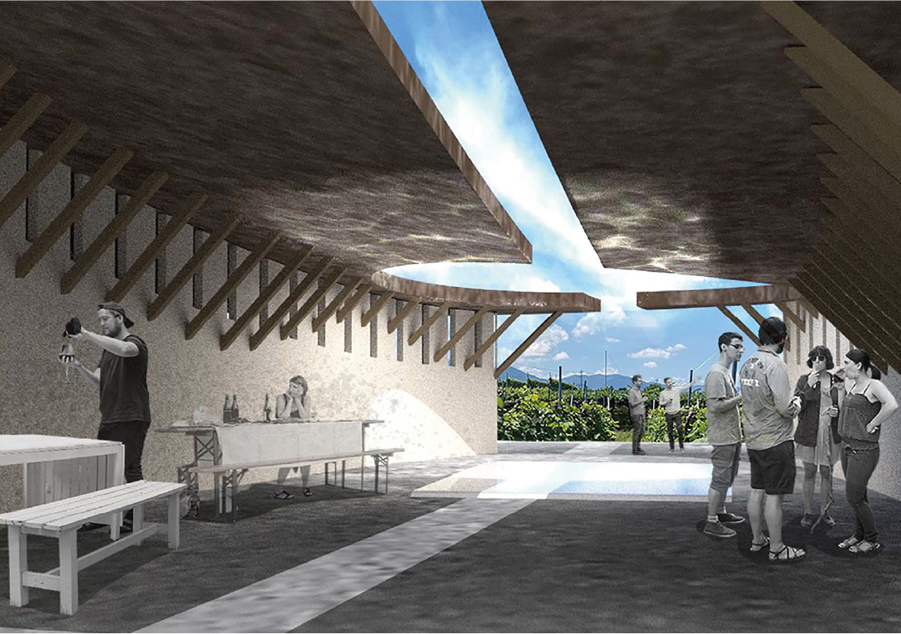
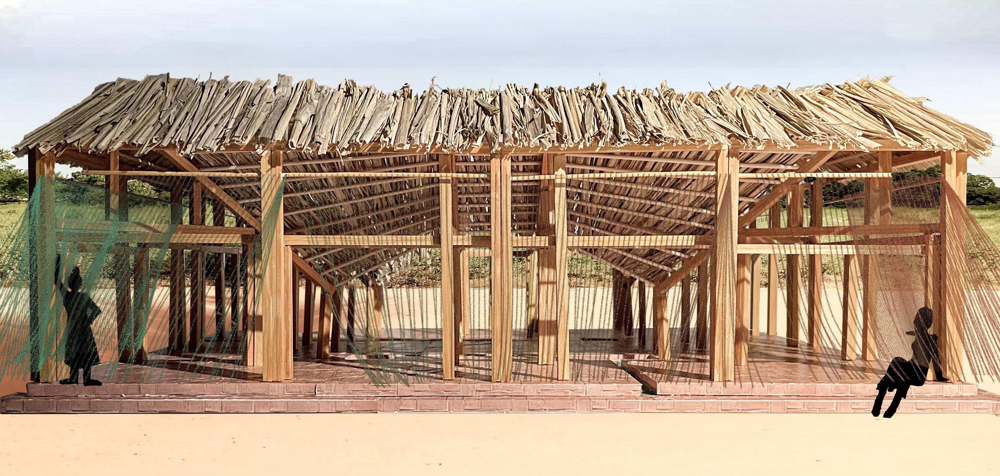
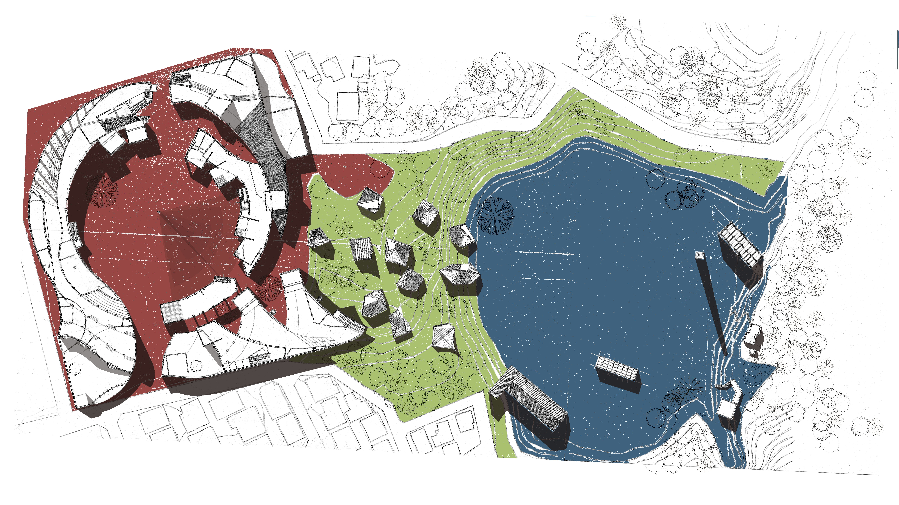
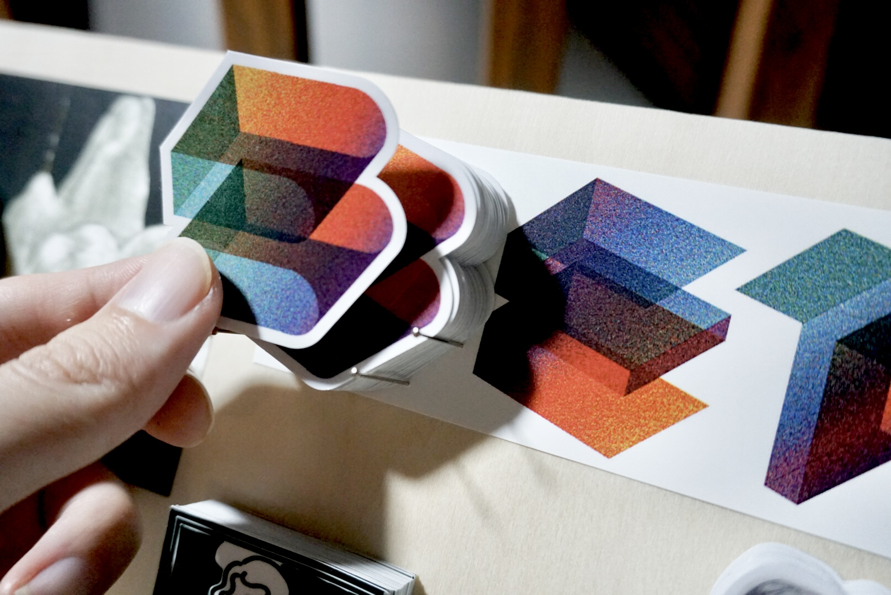

二上匠太郎
design
all project
architecture
product
graphic
event
research
all project
treatise
study
about
contact
Back to Home

WINE SCAPE IN JAPAN（2022）
山梨県甲府市をフィールドとして、ブドウ畑とワイナリー建築を環境シミュレーションによって横断的に設計する提案

Rasing and Braiding（2022）
セネガルをフィールドとして、女性や子どもの力だけで自力建設可能な空間と工法の提案

太陽と水の小学校（2020）
太陽の動きと連動して教室を配置した、遊水地と隣接した地元の小学校の設計提案
砺波散村の発生要因と持続要因の研究（2021）
卒業論文
近代日本-建築史（2023）
近代的構造材への仕方からみる、国家・都市・村落における創造的適応としての近代化受容80年の研究（修士論文）

別邸出版（2025）
各種グラフィックのデザインと展示用什器の設計